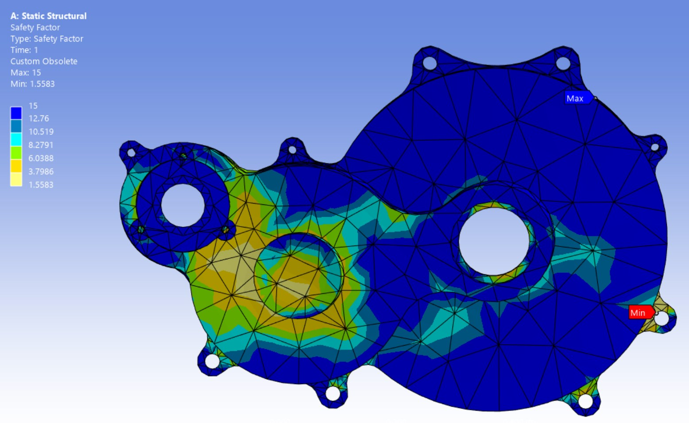
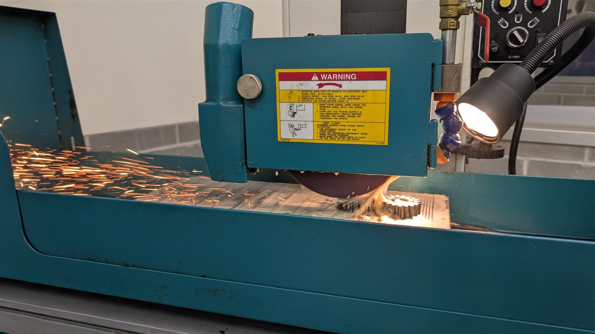
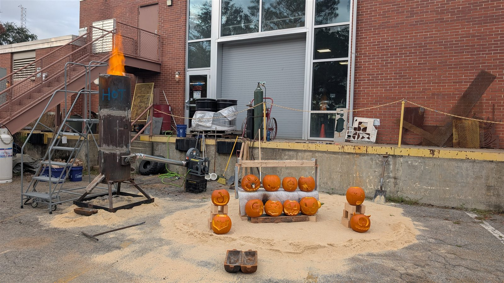

Selected work
Formula SAE Rear Wing & Full-Vehicle Aerodynamics
Roughly 65 CFD simulations sweeping angle of attack and element overlap, an 8.18M-cell IDDES transient, and then a full-vehicle model — because the isolated wing stopped predicting what the wing did on the car.
Ansys Fluent · IDDES · 16-core HPC
Baja Drivetrain & Chassis FEA
Bevel gears, splined shaft, gearbox housing, frame, and U-joint yoke in Ansys — drivetrain loads from a gear calculator I built — and the bevel gear failure the model didn’t predict.
Ansys Mechanical · Static & transient · Fatigue

Furnace Charge Chemistry Optimization
Turned the daily decision of what goes into the furnace into a nonlinear optimization — cost plus a weighted penalty for missing target chemistry, solved every day in VBA. It cut alloy cost.
Excel Solver · GRG Nonlinear + Multistart · VBA
Machining & Heat Treat
Billet knuckles, Baja gears made and heat treated in-house, titanium and brass pens — and a batch of hard castings I traced back to the melt, because the lathe is where a problem shows up, not where it starts.
HAAS UMC 750 · Okuma · Wire & sinker EDM

Permanent Mold Ice Cream Scoop
Won the AFS Southeast Regional Conference casting competition. We cast the mold in gray iron, machined it, then cast the scoop in aluminum — the tool was a casting before it was a tool.
Permanent mold · Gray iron · Aluminum · Machining

Cupola Furnace
The AFS student chapter’s first cupola — designed, built, and run, from the sight port to the night pour.
Shaft furnace · Refractory · AFS student chapter

Parametric Cast Iron Pattern
A 0.5 mm knife-edge that would never have survived the mold, fixed to a uniform 4.0 mm wall by changing how the geometry was constructed rather than what it looked like.
CadQuery · Design for manufacture
Background
I am finishing a master’s in mechanical engineering at Georgia Southern, where my research is experimental work on investment casting shell systems. That work is under NDA and produced a patent filing on which I am a named inventor.
On Eagle Motorsports’ Baja team I went from frame lead, to three years on drivetrain, to Team Captain — long enough to watch my own designs go through several full cycles of being built, run, broken, and redesigned. As captain I set a 20 lb weight reduction target for the car and doubled it, taking 40 lb off. I’m now the Formula SAE team’s aerodynamics simulation engineer.
In our AFS student chapter I built the chapter’s first cupola, and we won the AFS Southeast Regional Conference casting competition with a permanent mold ice cream scoop. The Foundry Educational Foundation awarded me the Donald Brunner Scholarship in 2024 and the John Deere Scholarship in 2025.
I have interned at Hendrickson (Motorwheel), Frito-Lay, and PCC Airfoils — plant maintenance and process optimization, line efficiency instrumentation, and casting quality engineering respectively.
The thread through all of it is that I would rather understand why something behaved the way it did than just report that it did. That is what pulled me toward simulation, and it is why these projects tend to end with the cause rather than the symptom.